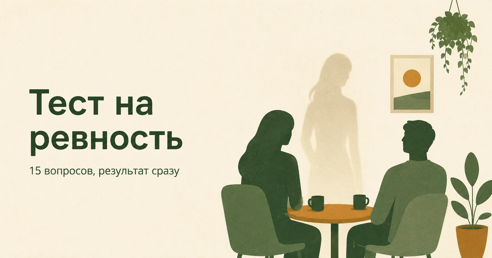

Главная → Тесты → Тест на ревность
Тест на ревность
Обновлено: 03.09.2026 · 3 минуты на прохождение
Это тест на ревность из пятнадцати вопросов: она показывает, насколько сильно ревность занимает ваши мысли, ранит чувства и управляет поступками. Результат — от 0 до 45 баллов и разбор, где проходит граница между обычной ревностью и контролем. Бесплатно, без регистрации, ответы остаются в вашем браузере.

Что с этим делать дальше. Балл — не диагноз, а точка отсчёта: смысл он приобретает в динамике, когда видно, растёт он или падает. В приложении AI Therapist есть дневник состояния, упражнения на основе приёмов КПТ и разговор с ИИ-психологом — можно пройти шкалу повторно через пару недель и сравнить.
Что показывает этот тест
Ревность удобно рассматривать не как одно чувство, а как три разные вещи, которые могут быть выражены по-отдельности. Это разделение предложили Сьюзан Пфайффер и Пол Вонг в 1989 году, и с тех пор оно стало общепринятым в исследованиях.
- Мысли — то, что происходит в голове: подозрения, мысленные проверки, воображаемые сцены, сравнение себя с другими. Их никто не видит, но именно они забирают больше всего сил.
- Чувства — то, что происходит в теле: укол при упоминании другого человека, тревога от неотвеченного сообщения, страх оказаться ненужным.
- Поступки — то, что видит партнёр: расспросы, проверки телефона, попытки ограничить чужое общение.
Разделение важно практически. Человек может почти не испытывать боли, но постоянно проверять переписки — и наоборот, мучиться внутри, ни разу ничем этого не показав. Это разные ситуации, и делать с ними надо разное. В тесте по пять вопросов на каждую сторону, они идут вперемешку.
Расшифровка результата
Каждый ответ стоит от 0 до 3 баллов, сумма — от 0 до 45. Границы ниже мы задали по смыслу пунктов, а не по статистике: помните об этом, если ваш результат оказался у самого края диапазона.
| Баллы | Уровень | Что это обычно значит |
|---|---|---|
| 0–11 | Ревность почти не мешает | Отдельные уколы бывают, но они не занимают мыслей и не влияют на поступки |
| 12–22 | Обычная ревность | Знакома большинству людей в отношениях: неприятно, но управляемо |
| 23–32 | Ревность заметно управляет вами | Много сил уходит на проверки и переживания, это уже сказывается на отношениях |
| 33–45 | Ревность стала главным содержанием отношений | Мысли почти не отпускают, поведение выстроено вокруг контроля — здесь нужна помощь |
Полезнее общей суммы — посмотреть на распределение. Пролистайте свои ответы и прикиньте, где стоят самые высокие оценки: в вопросах про мысли, про чувства или про поступки. Высокие баллы в «поступках» при спокойных «чувствах» — это чаще привычка контролировать, а не сила переживания. Обратная картина — внутренняя буря без внешних проявлений — обычно про страх потери и неуверенность в себе.
Чего этот тест не видит
Три ограничения, о которых важно знать до того, как вы посмотрите на свой балл.
Он не отличает обоснованную ревность от тревожной. Это главное. Если партнёр действительно нарушает договорённости, врёт о том, где был, или уже изменял — ваши подозрения не «симптом», а разумная реакция на факты, и балл будет высоким по совершенно здоровой причине. Тест измеряет интенсивность ваших мыслей и действий, но ничего не знает о том, что происходит на самом деле. Вопрос «а есть ли повод?» тест за вас не решит.
Он ничего не говорит о верности партнёра. Высокий балл — не доказательство измены, низкий — не гарантия её отсутствия. Люди с сильной ревностью часто пытаются использовать такие тесты как улику в споре; это не работает ни в одну, ни в другую сторону.
Он не различает причины. За похожей картиной может стоять очень разное: детский опыт, где близкие уходили без предупреждения; предыдущие отношения с изменой; общая тревожность, которая просто нашла себе тему; или реальная нестабильность в нынешней паре. Тест показывает форму, а не источник.
Почему ревность вообще возникает
Ревность — не порок и не признак слабости, это сигнальная система привязанности. Она включается, когда мозг считывает угрозу важной связи, и в умеренном виде есть почти у всех. Проблемой она становится не тогда, когда появляется, а когда перестаёт выключаться: срабатывает без повода, не успокаивается от объяснений и требует всё новых подтверждений.
Чаще всего за навязчивой ревностью стоит одно из трёх: страх, что вас бросят, если вы окажетесь недостаточно хороши; опыт предательства, после которого доверие не восстановили; или общая тревожность, для которой отношения — просто удобная мишень. Подробный разбор причин и того, что с ними делать, — в статье о том, почему возникает ревность и как перестать себя мучить.
Где проходит граница с контролем
Ревность — это чувство, и за чувство человека не судят. Контроль — это поступки, ограничивающие свободу другого, и здесь граница проходит независимо от того, насколько сильно вы переживаете.
Признаки, при которых речь идёт уже не о ревности:
- партнёр отчитывается о каждом перемещении, иначе будет скандал;
- круг его общения сужается — сначала «этот друг мне не нравится», потом друзей не остаётся;
- проверка телефона стала регулярной и обязательной;
- ревность используется как объяснение для крика, порчи вещей или физической силы;
- решения о работе, учёбе, внешнем виде принимаются не самим человеком.
Если вы узнаёте себя в этом списке — это плохая новость, но не приговор: контролирующее поведение поддаётся работе, особенно пока человек сам его замечает. Если вы узнаёте в нём партнёра — стоит прочитать, как устроены токсичные отношения, и помнить, что изоляция от близких обычно нарастает постепенно.
Что делать, если ревность мучает
Ниже — то, что помогает независимо от балла. Каждый пункт подробно разобран в статье о том, как перестать себя мучить ревностью: там же про то, что делать, если ревнует не вы, а вас.
- Разделите факты и домыслы. Выпишите отдельно то, что действительно произошло, и отдельно — то, что вы достроили. Ревность живёт именно во второй колонке и почти всегда её переполняет.
- Не проверяйте. Проверка даёт облегчение на час и укрепляет привычку на месяцы: мозг запоминает, что тревога снимается проверкой, и требует следующую. Это тот же механизм, что и у навязчивых мыслей.
- Говорите о чувстве, а не о подозрении. «Мне было тревожно, когда ты не отвечал» — разговор. «С кем ты был?» — допрос, после которого партнёр начинает защищаться, и вы получаете именно ту уклончивость, которой боялись.
- Займитесь тем, что держит вас в стороне от отношений. Ревность разрастается в пустоте: чем меньше у человека своей жизни, тем больше места занимает чужая.
- Проверьте фон. Если тревожно не только в отношениях, дело может быть не в ревности — тогда полезнее начать с теста на постоянное беспокойство.
Ревность тяжело обсуждать даже с близкими: страшно выглядеть неуверенным или смешным. Здесь можно проговорить это без осуждения — анонимно и в любое время.
Частые вопросы
Что показывает тест на ревность?
Он показывает, насколько сильно ревность выражена в трёх её проявлениях: в мыслях (подозрения и мысленные проверки), в чувствах (боль, тревога, страх потери) и в поступках (расспросы, проверки, контроль). Результат — от 0 до 45 баллов. Тест не определяет, есть ли у вас реальный повод для ревности, и не говорит ничего о верности партнёра.
Ревность — это нормально?
Да, в умеренном виде она есть почти у всех: это сигнальная система привязанности, которая включается при угрозе важной связи. Проблемой ревность становится не когда появляется, а когда перестаёт выключаться — срабатывает без повода, не успокаивается от объяснений и требует всё новых подтверждений.
Чем ревность отличается от контроля?
Ревность — это чувство, и за чувство человека не судят. Контроль — это поступки, которые ограничивают свободу другого: требование отчитываться, регулярная проверка телефона, сужение круга общения. Граница проходит по поступкам, а не по силе переживания: можно очень сильно ревновать и ничем не ограничивать партнёра.
Насколько этому тесту можно доверять?
Тест построен на общепринятом разделении ревности на три стороны — мысли, чувства и поступки, — и показывает, какая из них у вас выражена сильнее. Он не ставит диагноз и не сравнивает вас с населением: границы уровней заданы по смыслу вопросов. Как и любой опросник, он опирается на самоотчёт, поэтому результат стоит читать как повод присмотреться, а не как вывод о себе.
Материал подготовлен командой AI Therapist. Вопросы опросника составлены нами; из научной литературы взято общепринятое разделение ревности на когнитивную, эмоциональную и поведенческую составляющие. Это самопроверка, а не диагностическая шкала: она не ставит диагноз и не заменяет консультацию специалиста.
Источники: Pfeiffer S. M., Wong P. T. P. «Multidimensional Jealousy», Journal of Social and Personal Relationships, 1989 — источник трёхкомпонентной модели, NHS — Getting help for domestic violence.
Кто отвечает за содержание сайта и по каким правилам мы готовим материалы — на странице о проекте.